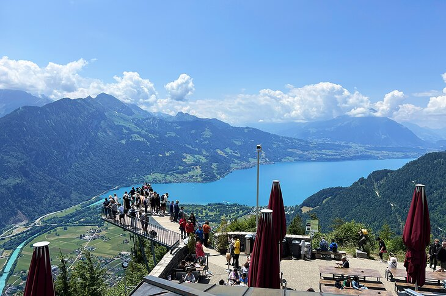
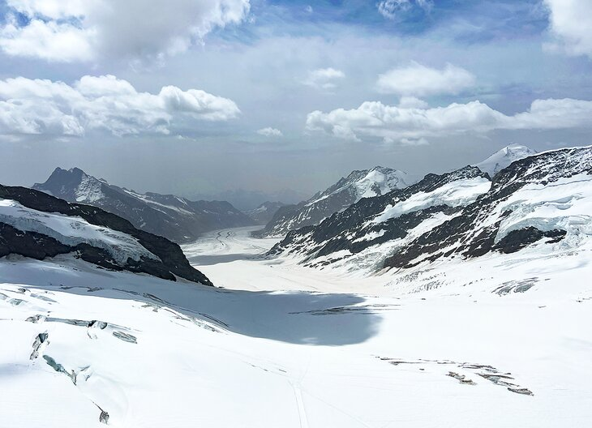

Zurich is Switzerland's largest city, a major transportation hub, and a top starting point for travelers. The city lies at the northwestern end of Lake Zurich astride the river Limmat. Beyond its buttoned-up façade, this affluent banking capital boasts a rich line-up of cultural treasures.

Nestled on a strip of land between two glassy lakes, Interlaken looks like a postcard brought to life. The enchanting resort town has been a popular vacation destination for centuries, giving tourists a home base to explore the Bernese Oberland. Visit in the spring or summer to take in the striking sight of the town's lush gardens blooming with the snow-dusted Eiger, Jungfrau, and Mönch towering in the background.
Since 1912, tourists have been making their way to the fairytale-like village of Grindelwald for an excursion to the Top of Europe (also known as Jungfraujoch). As its name suggests, it's the highest train station in Europe.
The Matterhorn, Switzerland's iconic pointed peak is one of the highest mountains in the Alps. On the border with Italy, this legendary peak rises to 4,478 meters, and its four steep faces lie in the direction of the compass points. The first summiting in 1865 ended tragically when four climbers fell to their death during the descent. Today, thousands of experienced climbers come here each summer.